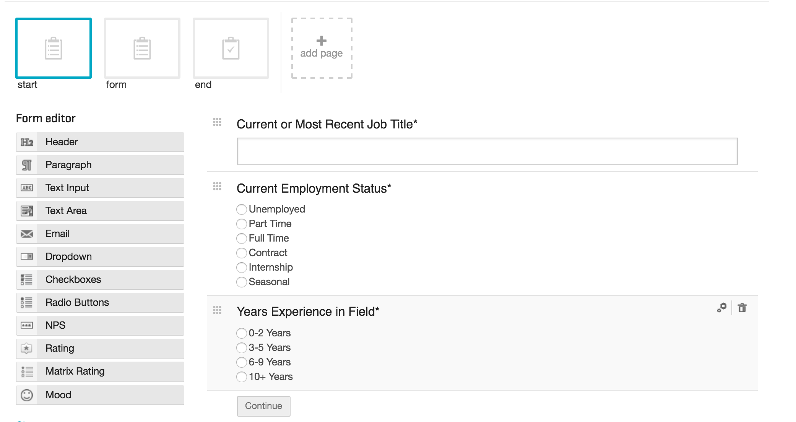

PROBLEM
Lack of research support in running and maintaining our VOC tool, Usabilla. Many people within the company had access to use the tool to receive feedback about the site, as well as post surveys directed to our job seekers and clients. Often the surveys being posted were biased and/or the wrong method to validate what was being tested.
PROCESS
I took over as owner and contact for Usabilla in order to help establish best practices and support for those wanting to utilize the tool for testing purposes. I created a living document of best practices and how-to guides for users within our company. I also set up a series of permissions to ensure surveys were not being posted before being reviewed by a member of the UX team.
FINDINGS/OUTCOMES
As a result of these new standards and permissions, we now have a regulated system and format all testing should be conducted in. We now have less errors caused by Usabilla due to the number of people within the company using the product, and all tests deliver accurate and unbiased results.
- Time Frame
- June 2015 - Present
- Role
- Principal Researcher
- Company Contact
- Tools
- Usabilla
PROJECT DETAILS